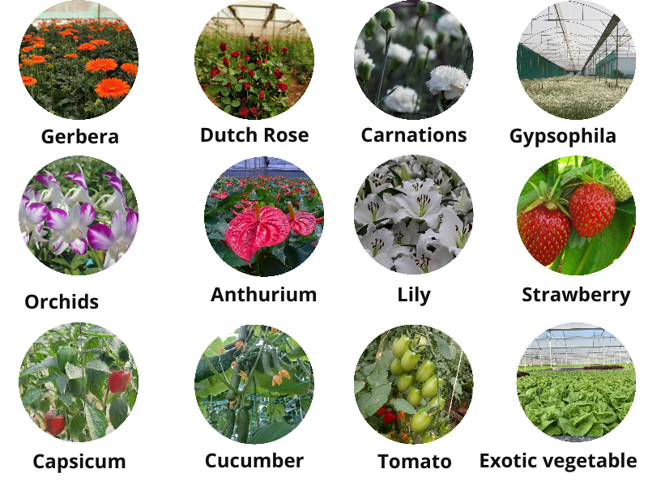

A Greenhouse is a framed structure covered with a transparent material that is large enough to grow crops under partial or fully controlled environmental conditions for optimum growth and productivity. Greenhouse Technology is the technique of providing favorable environmental conditions to the plants. The greenhouse industry is the fastest-growing sector of all agricultural production activities. The greenhouse is goldmines that offer the most profitable business opportunities. The use of the greenhouse is mainly for producing seasonal and non-seasonal crops, the production of high-quality flowers, vegetables, and the preparation of a nursery prepared by tissue culture.
Different types of greenhouses are available based on shape, construction, material, and ventilation. Each greenhouse type has its own advantage. Different types of greenhouses are designed according to match specific needs. Generally, in India, sawtooth Natural ventilated greenhouse is used for cut flower and vegetable production purposes.
1.Sawtooth-type Greenhouse 2.Ridge and furrow type greenhouse. 3.Uneven span type greenhouse. 4.Even span type of greenhouse. 5.Sawtooth type. 6.Quonset greenhouse. 7.Interlocking ridges greenhouse. 8.Ground-to-ground greenhouse.
1.Wooden framed structures – It is a low-cost greenhouse for Vegetable Production. 2.Pipe-framed structures.
1.Glass greenhouse Glass greenhouse most suitable for cold weather country like United states, Canada. 2.Plastic greenhouse plastic greenhouse also called polyhouse which is mostly used in India.
This type of greenhouse is based on natural ventilation, and depending on the crop’s requirement, the temperature, humidity, and carbon dioxide gas can be maintained as per the requirement. In this Greenhouse, upper and side shade nets prevent insect and bacterial access to control inside temperature. This type of greenhouse is used to produce cut flower-like Gerbera, Dutch rose, Carnation, Lily & Vegetables like Colour capsicum, Tomato, Cucumber, and Exotic vegetables.
2. Climate Control Greenhouse (Fan & Pad Polyhouses)In such a greenhouse, temperature and humidity are controlled by using micro-irrigation techniques. In this type of greenhouse, the internal environment is fully managed. This type of greenhouse is mostly used for Hi-tech nurseries and hi-tech hydroponic project.
Before starting greenhouse farming, you have to consider the following point to become successful in greenhouse farming. 1.Soil PH Should be between 5.5 to 6.5 and EC (Volatility) 0.3 to 0.5 mm/cm. 2.Good water quality is continuously available. 3.The irrigation water samples should be range from PH 5.5 to 7.0 and E.C. 0.1 to 0.3. 4.The selected place should be pollution-free. 5. There should be roads for the transportation and shipping goods in the market. 6.The place should be large enough for the upcoming expansion. 7. Workers should be available easily. 8.There should be excellent communication facilities in place. 9.The drainage of the soil should be excellent.
Greenhouse farming requires high investment; hence though the crop has high commercial value & sustainable market demand, this crop is cultivated in the Greenhouse. Floriculture crop, like all cut flower & vegetable, is mainly grown in the greenhouse.
What Are The Most Profitable Crops To Grow In A Greenhouse?The profitability of greenhouse crops depends on the market, climatic conditions, labor, and raw material availability. List of Most Popular Floriculture and vegetable growing crops in a Greenhouse.
